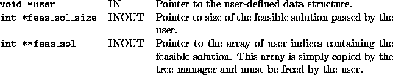

int user_process_own_messages(void *user, int *feas_sol_size, int **feas_sol)
This function is useful for debugging purposes. It passes a known feasible solution to the tree manager. The tree manager then tracks which current subproblem admits this feasible solution and notifies the user when it gets pruned. It is useful for finding out why a known optimal solution never gets discovered. Usually, this is due to either an invalid cut of an invalid branching. Note that this feature only works when branching on binary variables. See Section 1.12.4 for more on how to use this feature.
